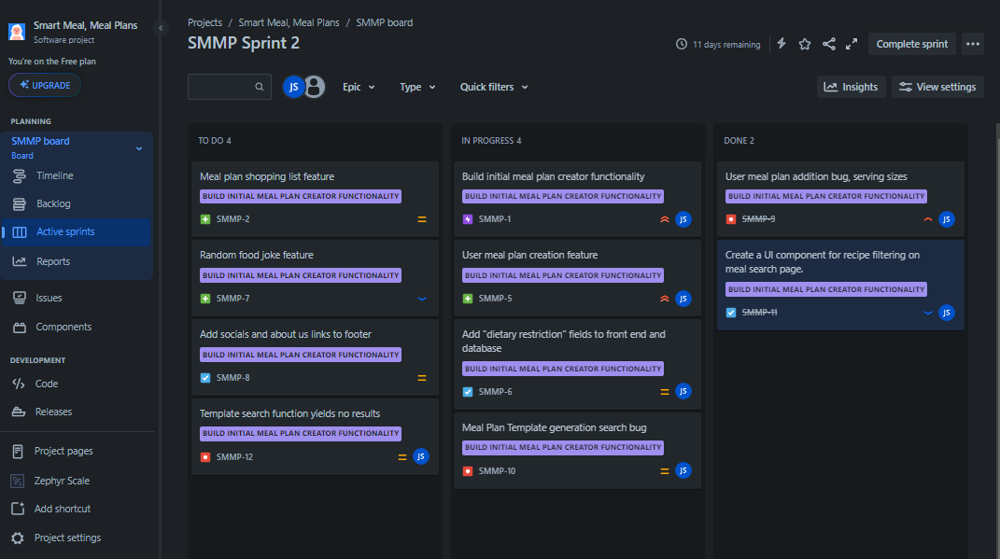
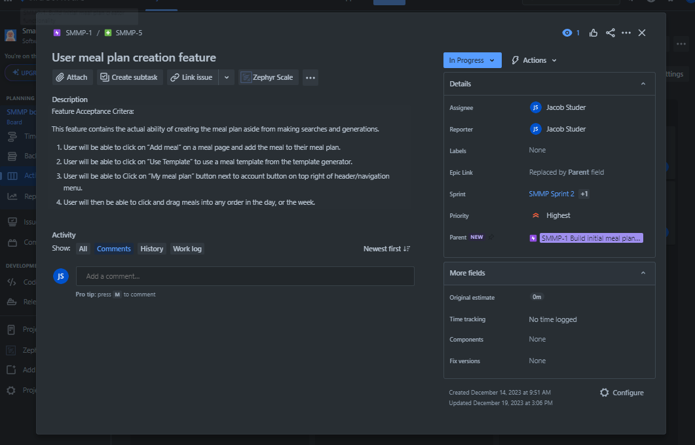
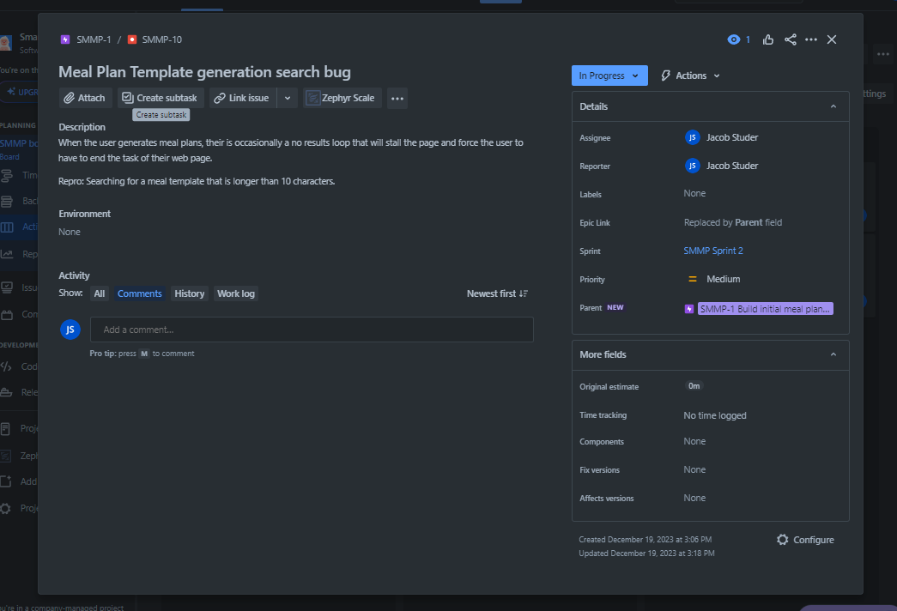

Jira Project Board for Smart Meal
A simple example project was created in Jira to show knowledge of Jira and SCRUM boards. This also created a use case for the zephyr scale regression testing and Postman API testing in the other sections of my portfolio.
SCRUM Board Overview

The overview of the SCRUM board with a central Epic the examples are linked to. Complete with Features, Bugs, and Tasks which are in a To Do, In Progress, or Done state.
Looking at the Features

Closer look at a feature which has a description and Acceptance Criteria defined.
Here's a Bug

Example bug of a plausable defect in the application, including a decription and repro steps.